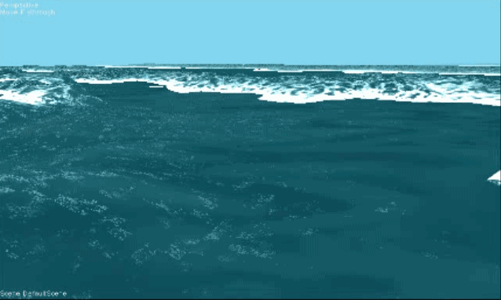
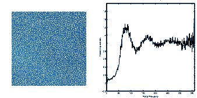
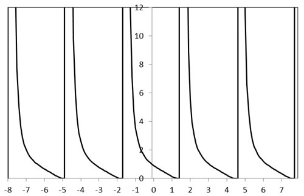
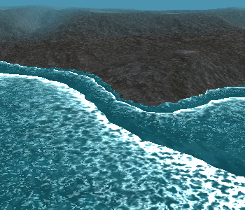
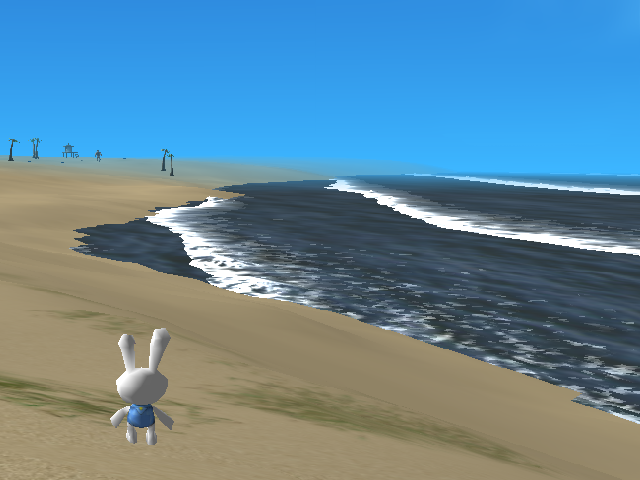

Mary Yingst, Jennifer R. Alford, and Ian Parberry,
"Very Fast Real-Time Ocean Wave Foam Rendering Using Halftoning",
Proceedings of the 6th International North American Conference on Intelligent Games and Simulation (GAMEON-NA),
pp. 27-34, EUROSIS, Troy, NY, 2011.
Abstract
We introduce an efficient method for emulating sea foam dissipation suitable for use in real-time
interactive environments such as video games. By using a precomputed dither array with controlled spectral
characteristics adopted from halftone research as a control mechanism in the pixel shader, we can animate
the appearance of foam bubbles popping in a random manner
while allowing it to clump naturally.
Videos
Closeup of Three Techniques
The following video shows waves rendered in three different ways: Using the foam mask created using half-toning techniques at left,
the traditional method using an alpha-blended foam texture in the center,
and our new technique at right.
Coastline Example
This video shows how the sea foam looks when put together with a rudimentary seaside scene.
Images and Animations

Repeating wave animation.

Animation of halftone maps generated with increasing values of γ.
At left, halftone masks created using Gaussian filters with γ ranging from 1.5 to 24.
Notice
that the dots appear to cluster more in the later images than the earlier ones.
The corresponding
RAPS are shown at right.

A graph of the function e-tan x.

Coastline with waves.

Screenshot of foam implemented in third-person game.